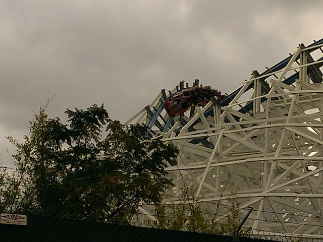
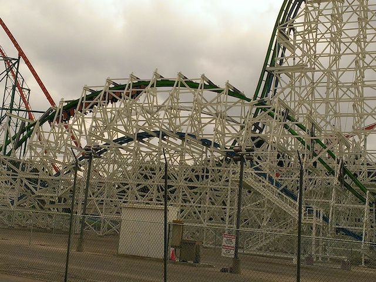
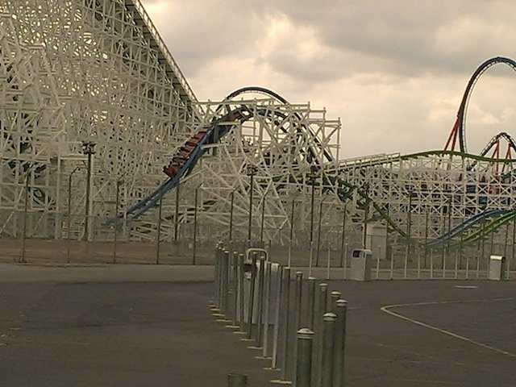
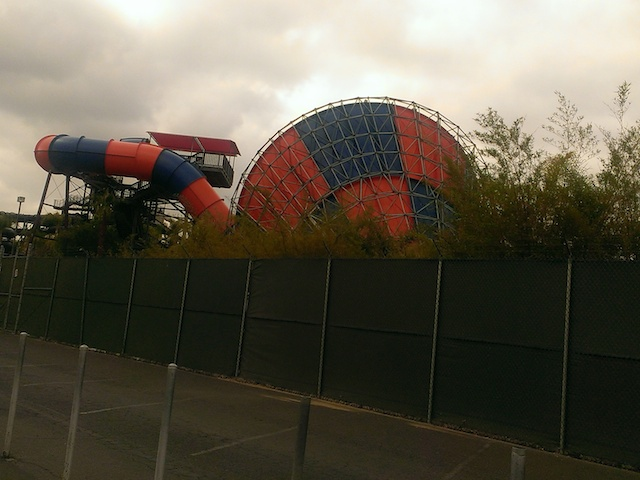
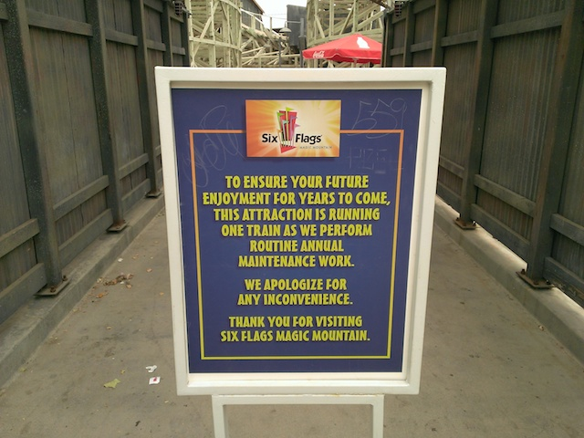
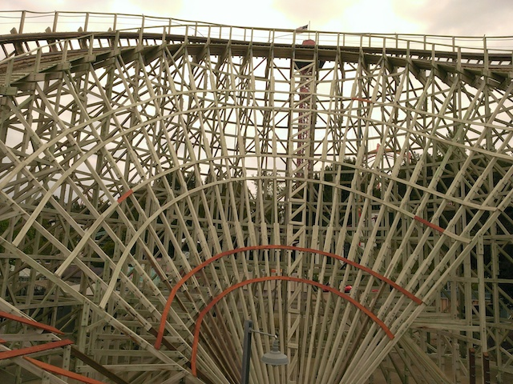
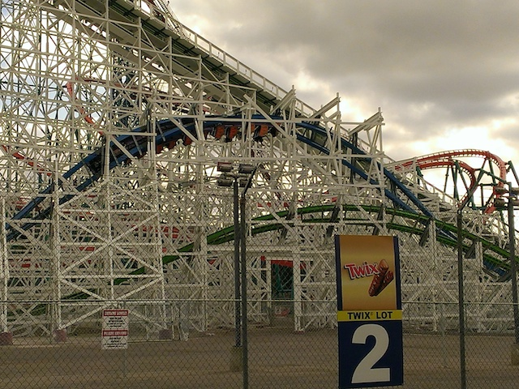

| |
Twisted Collosus Day
 All right. Time for another update. We finally made it to Six Flags Magic Mountain this year. Why? Simple. Twisted Collosos has finally opened up. And I need to go on and on about this ride. I know this update is a little late, I was just out of the state when everyone was going nuts, and I didn't get many photos when I dropped by to ride it. So I had to go back and get more photos (and more rides) before I could finally make this update.
All right. Time for another update. We finally made it to Six Flags Magic Mountain this year. Why? Simple. Twisted Collosos has finally opened up. And I need to go on and on about this ride. I know this update is a little late, I was just out of the state when everyone was going nuts, and I didn't get many photos when I dropped by to ride it. So I had to go back and get more photos (and more rides) before I could finally make this update.
All right. Let's go on and check out the Twisted Collosus line.
Quick little pet peeve nitpick. I'm always annoyed when people refer to the steel RMCs as Hybrid Coasters. They're steel coasters. Plain and simple. Iron Rattler is a steel coaster, New Texas Giant is a steel coaster, and Twisted Collosus is a steel coaster. The fact they have wooden supports doesn't matter. Excalibur @ Valleyfair and Gemini have wood supports as well. But nobody calls them Hybrid Coasters. And Voyage and even the Coney Island Cyclone have steel supports, but nobody questions their status as wooden coasters and tries to call them Hybrid Coasters. Sorry, I know the vast majority of people don't give a f*ck. This is just something that rubbed me the wrong way whenever it was discussed about the RMCs in the roller coaster community.
Some of the crazy new elements you'll find on Twisted Collosus.
Wow! This ride is only a couple weeks old and look at all the movies it's already starred in. I didn't think Hollywood worked that fast. =)
 I've already written my Twisted Collosus Review where I go into full details about where I think about the ride. But I'll just say this again here. TWISTED COLLOSUS IS F*CKING AWESOME!!!
I've already written my Twisted Collosus Review where I go into full details about where I think about the ride. But I'll just say this again here. TWISTED COLLOSUS IS F*CKING AWESOME!!!

I know that this is the first High Five in America and the 2nd one ever after the one on that woodie in China. Holy Crap!! This element is awesome. It feels like a freaking Strengal Dive right there, particuarly on the Green side.

This Top Gun stall is a really great element. You get some great hangtime and truly feel upsidedown on the ride.

And as for the Zero G Roll, HOLY CRAP!!! This thing has WHIP to it!!! It does not treat you gently at all!! =D
The only issue I have with Twisted Collosus is of course, the operations. They are not taking care of the ride, it rarely duels (Hey, at least it's out of laziness and not delibrately done out of bullsh*t and stupidity. I'm looking at you Universal Orlando Resort), and the operators really seem to be struggling. Get out of my way! I know how to run a rides! I'm an ex-employee! I'll get this line moving!
In good news, Twisted Collosus has a single riders line!! YAY!! =) In bad news, it's not as helpful as I hoped. I've gone twice for Twisted Collosus. The first time, it was closed. The second time, the Single Riders Line was just as long as the regular line. Bummer, well hopefully they'll keep it open in the future and it'll take care of itself from there, becoming as helpful as the Single Riders Line for Lex Luthor and Riddlers Revenge. Those get us on immidietly, and I'd love it if it was on one of my favorite coasters.
Good thing we rode Twisted Collosus when we did.
 Oh, and they also re-opened Scream. Nice new sign.
Oh, and they also re-opened Scream. Nice new sign.
 Hmm. Notice anything different about Scream?
Hmm. Notice anything different about Scream?
 Yep. They finally repainted Scream. FINALLY!! This ride needed it. Now I'm not exactly crazy about the new color scheme (then again, I wasn't crazy about the old one either), but the sheer fact that it looks new and fresh is a MAJOR improvement for a ride I already really like.
Yep. They finally repainted Scream. FINALLY!! This ride needed it. Now I'm not exactly crazy about the new color scheme (then again, I wasn't crazy about the old one either), but the sheer fact that it looks new and fresh is a MAJOR improvement for a ride I already really like.

Hmm, looks like Tornado got the same new paint job as Scream. Meh, I prefered the yellow and blue, but at least it matches, and at least they're taking care of their water slides.
Honestly, I just really like the new Steampunk theme for the area. Good job on the new area Six Flags Magic Mountain. Thumbs up from Incrediblecoasters. =)

Meanwhile in the rest of Six Flags Magic Mountain, things are going exactly as you'd expect them to be going.

I've heard a TON of complaints about how Terminator/Apocalypse is now unbearably rough and how SFMM isn't maintaining the ride. Is the ride rough? Yes. It's gotten undeniably rough. You can FEEL the vibrations. You KNOW that the ride isn't supposed to massage your ass like that. But at the same time, it's a fun kind of rough. An enjoyable kind of rough. I may have noticed it, but I certainly wasn't in pain because of it. While I'd certainly rather it not be there, I still had fun on Apocalypse. If I had any complaints about the ride, it'd be the wood. HOLY SH*T!!! THIS RIDE GOT UGLY!! When you're re-tracking the ride (YOU NEED TO), please also freshen up the wood, cause this just looks pale and faded and UGLY!!!
Ugh. Having worked multiple Grad Nights in the past, all I can say is, good luck to you employees this year.
God Damn It! Really? You guys are pulling the La Ronde trick over here and closing early? Well, at least you're warning people ahead of time. But come on. Those employees could use the hours. And I've worked X2 on a closing shift. It's not that bad. But yeah, this and combined with the fact that X2 is running only one train with the line to the soda machines, NOT GOOD NEWS. I know X2 is one of my favorite rides in the park, but SCREW THIS (Hey, at least I did get on it during one of my earlier visits this year)!!
Oh hi original Collosus. How much longer are you and your mural going to be here until it's replaced with the Twisted Collosus mural? =)
Nice new sign.
 WHOA!! Did they also sneak in a paint job for Roadrunner Express when my back was turned? I am impressed here. =)
WHOA!! Did they also sneak in a paint job for Roadrunner Express when my back was turned? I am impressed here. =)
 All right. Let's get back to Twisted Collosus for more epicness.
All right. Let's get back to Twisted Collosus for more epicness.
 I know EVERYONE is going on and on about how Twisted Collosus is now by far the best coaster in California. Well, you know how much I LOVE X2 and how it's currently in my Top 10 Steel Coasters. So...it's hard to choose between the two! They're both just really great coasters!
I know EVERYONE is going on and on about how Twisted Collosus is now by far the best coaster in California. Well, you know how much I LOVE X2 and how it's currently in my Top 10 Steel Coasters. So...it's hard to choose between the two! They're both just really great coasters!

Regardless of which one is better, Twisted Collosus is an AMAZING coaster and exactly what I've saying that California needs for years on end now. So now that it's finally here, I am happy.
 HOLY CRAP!!! TWISTED COLLOSUS IS DUELING!!! MUST CAPTURE THIS INCREDIBLY RARE MOMENT!!!
HOLY CRAP!!! TWISTED COLLOSUS IS DUELING!!! MUST CAPTURE THIS INCREDIBLY RARE MOMENT!!!
 I love Twisted Collosus enough as it is right now. When it's dueling, good god. That might just push it over the edge. =)
I love Twisted Collosus enough as it is right now. When it's dueling, good god. That might just push it over the edge. =)
Yeah. Twisted Collosus is a GREAT ride and I'll be riding it A LOT this summer and from now on. You need to come to Six Flags Magic Mountain and ride this ride RIGHT NOW!!!
Home
|